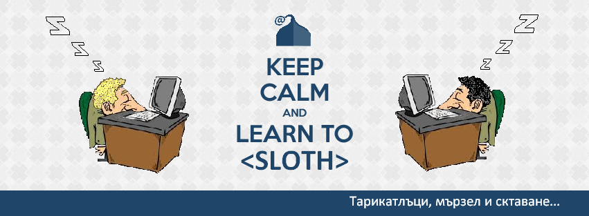

Прочети нашите полезни съвети:
"Ако работата беше спешна ... все ще се намери някой друг да я свърши."
"Ако видиш някой да си почива - помогни му!"
"Aко ти се приработи, седни и чакай да ти мине!"
"Ако отложиш днешната работа за в другиден печелиш цели два дни."
"Амбицията е лошо извинение за липсата на достатъчно разум, за да бъдеш мързелив."
"Безделието не знае покой."
"Научи се да си почиваш още преди да си се изморил"
"Да откраднеш идея от един е плагиатство, но да откраднеш от много е проучване."
"Работата и в сутиен да ти я сложат...НЕ Я ПИПАЙ!"
"Прогресът не се гради от работливите, а от мързеливите, които се опитват да намерят по-лесни начини да направят нещо."
"Чувал съм, че работата не може да те убие, но защо да рискувам?"
"Ефективността е интелигентен мързел."
"Яж закуската си предишната вечер, за да може да спиш другия ден до късно."
Винаги давай 100% от себе си в работата:
- 10% в понеделник
- 25% във вторник
- 30% в сряда
- 25% в четвъртак
- 10% в петък